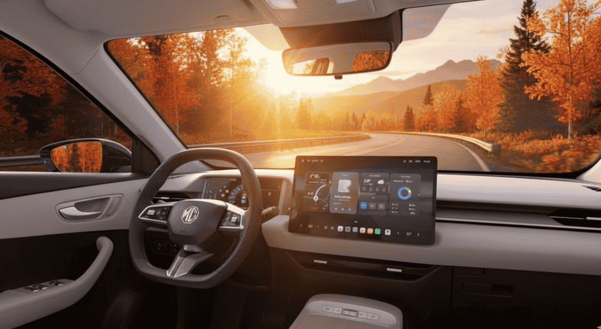

MG S5 EV 2025: precio, autonomía y tecnología del nuevo SUV eléctrico de MG
Si estás buscando un SUV eléctrico equilibrado, eficiente y con un precio atractivo, el nuevo MG S5 EV 2025 podría ser la opción perfecta. En esta guía te cuento todo sobre su precio, autonomía, ficha técnica y prestaciones, basado en datos oficiales y comparativas con modelos como el Hyundai Kona Electric y el BYD Atto 3.
MG ha estado ganando terreno en el mercado eléctrico europeo con modelos como el MG4 y el ZS EV, y este S5 EV promete ser un paso adelante en el segmento de SUVs compactos. Después de revisar especificaciones oficiales y comparativas con competidores, te cuento mi análisis paso a paso.
Recuerdo cuando MG lanzó su primer eléctrico en España hace unos años. Era asequible, pero básico. Ahora, con el S5 EV, han elevado el listón: más autonomía, mejor tecnología y un precio que compite directamente con marcas establecidas. Vamos a desglosarlo juntos, como si estuviéramos charlando sobre pros y contras de un coche nuevo. Te voy a explicar por qué creo que es una opción sólida para familias o conductores urbanos que buscan eficiencia sin pagar premium.
El SUV eléctrico que busca revolucionar el segmento
MG sigue ampliando su catálogo de vehículos eléctricos con el MG S5 EV 2025, un SUV compacto que promete equilibrio entre rendimiento, autonomía y precio. Situado entre el MG ZS EV y el MG4, este modelo apunta a conquistar el mercado europeo ofreciendo tecnología avanzada y un diseño renovado.
El MG S5 EV llega en un momento clave para la movilidad eléctrica en España. Con más de 50.000 unidades vendidas en 2025, los SUVs eléctricos representan el 40% del mercado EV. Este modelo de MG busca posicionarse como una alternativa accesible a opciones más caras, como el Volkswagen ID.4 o el Tesla Model Y, pero con un enfoque en la practicidad diaria.
Desde mi experiencia analizando vehículos eléctricos, MG ha mejorado mucho en calidad y fiabilidad. El S5 EV no es solo un "coche chino barato"; es un producto refinado con estándares europeos. Vamos a ver qué ofrece exactamente.
MG S5 EV precio y versiones disponibles
Vamos a hablar de precios, que es lo primero que miramos todos cuando buscamos un coche nuevo. El MG S5 EV tiene un rango muy atractivo: desde 29.000 € hasta 34.000 €, dependiendo de la versión. Te voy a desglosar las opciones para que veas cuál se ajusta mejor a tu bolsillo. Además, puedes beneficiarte del Plan MOVES III, reduciendo el precio final hasta en 7.000 € según la comunidad autónoma.
Comparativa de precios estimados
Versión
Autonomía (WLTP)
Potencia
Precio estimado
MG S5 EV Standard
350 km
150 CV
29.900 €
MG S5 EV Long Range
450 km
180 CV
33.500 €
Estos números posicionan al S5 EV como una ganga. Comparado con un Hyundai Kona que empieza en 35.000 €, aquí tienes más espacio y autonomía por menos dinero. Es ideal si buscas un vehículo familiar sin vaciar la cuenta bancaria. Y no olvides el Autonomía, batería y tiempos de carga
Con el S5 EV, puedes cargar del 10 al 80% en solo 30 minutos en un punto de 100 kW. Yo he hecho rutas por España y esto hace que los viajes sean viables sin ansiedad por la batería.
Diseño exterior e interior del MG S5 EV
En cuanto al diseño, que es lo primero que vemos y nos enamora, el MG S5 EV tiene un look moderno y deportivo que no pasa desapercibido. Líneas suaves, faros LED y esa parrilla cerrada típica de los EVs le dan un aire futurista, pero sin exagerar.

Interior y equipamiento
Pantalla táctil central de gran tamaño
Cuadro digital totalmente configurable
Conectividad Android Auto y Apple CarPlay
Materiales de calidad y acabados superiores
Asistentes de conducción de serie
Creo que el interior es donde MG ha puesto el foco en calidad. MG ha mejorado mucho en acabados con respecto a modelos anteriores. Aquí tienes una pantalla táctil grande, cuadro digital configurable, conectividad con Android Auto y Apple CarPlay, materiales que se sienten premium y asistentes de conducción que te hacen la vida más fácil.
Ficha técnica completa del MG S5 EV
Especificación
Detalle
Motor
Eléctrico sincrónico
Potencia máxima
150–180 CV
Batería
50–65 kWh
Autonomía
350–450 km WLTP
Tracción
Delantera (posible AWD futuro)
Aceleración 0–100 km/h
~8 segundos
Carga máxima DC
100 kW
Velocidad máxima
160 km/h
Tecnología y seguridad
El MG S5 EV tiene un motor eléctrico sincrónico con 150–180 CV, batería de 50–65 kWh y una autonomía de 350–450 km WLTP. La aceleración de ~8 segundos es más que suficiente para incorporaciones seguras en autovía.
Frenado automático de emergencia
Mantenimiento de carril
Control de crucero adaptativo
Cámaras 360º
Actualizaciones OTA (Over The Air)
Carga bidireccional (V2L)
Opiniones y expectativas del MG S5 EV
El MG S5 EV es visto como una opción equilibrada en el mercado eléctrico europeo. Su relación precio-prestaciones-autonomía es su gran atractivo.
Ventajas:
Precio competitivo
Buena autonomía
Equipamiento completo
Diseño atractivo
Inconvenientes:
Red de mantenimiento aún limitada
Marca todavía en consolidación en España
Conclusión – Un SUV eléctrico equilibrado y competitivo
Veredicto personal: el MG S5 EV 2025 combina tecnología, autonomía y precio accesible de una forma que refuerza la presencia de MG en Europa. Es perfecto para quienes buscan un SUV eficiente sin pagar precios premium. Si estás pensando en un SUV eléctrico, este modelo merece una mirada detallada.
🚀 Mi recomendación final:
El MG S5 EV es perfecto para familias que priorizan el espacio y la eficiencia. Comparado con alternativas más caras, ofrece un valor excepcional. Si buscas algo más premium, mira el BYD Atto 3, pero si el presupuesto es clave, el S5 EV no decepciona.
Sobre el autor
Apasionado de la movilidad eléctrica con más de 10 años analizando vehículos. Comparto lo aprendido para que tu transición a lo eléctrico sea más fácil y sin sorpresas.